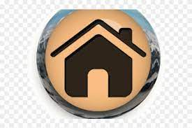

En segundo de bachillerato, los temas principales que se estudian varían según la modalidad (Ciencias y Tecnología, Humanidades y Ciencias Sociales, etc.) y la asignaturas elegidas.
Asignaturas Comunes:
Lengua Castellana y Literatura: Análisis literario, gramática y redacción.
Historia de España: Desde la Edad Media hasta la actualidad.
Historia de la Filosofía: Filosofía clásica, moderna y contemporánea.
Lengua Extranjera: Profundización en idioma extranjero (Inglés, Francés, etc.).
Modalidad Ciencias y Tecnología:
Matemáticas, Física, Química, Biología y Geología.
Modalidad Humanidades y Ciencias Sociales:
Historia del Mundo Contemporáneo, Economía, Geografía.
Optativas: Literatura Universal, Artes Escénicas, Música, entre otras.
